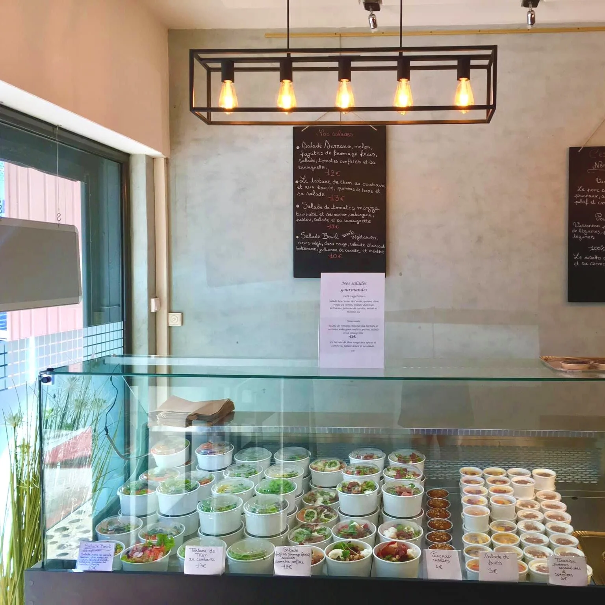
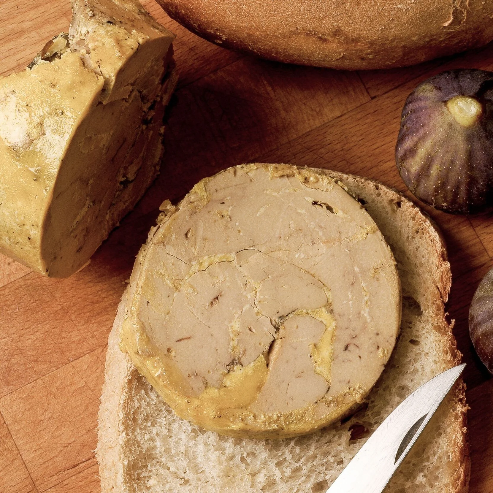

C'est Prêt — Plats à emporter
Découvrez nos plats à emporter avec notre service « C'est Prêt ». Savourez la gastronomie de L'Atelier de Ben chez vous, préparée avec le même soin et la même excellence que nos plats servis en salle.

Restaurant Gastronomique à Saint-Denis
Une expérience culinaire simple, honnête et généreuse, revisitée par le chef Benoit Vantaux avec des influences internationales et des produits locaux de La Réunion.

L'atelier de Ben vous accueille pour une expérience culinaire simple, honnête et généreuse, revisitée par le chef Benoit Vantaux avec des influences internationales et des produits locaux.
Niché au cœur de Saint-Denis, notre restaurant vous invite à un voyage gastronomique unique, où la tradition française rencontre les saveurs du monde et l'authenticité des terroirs réunionnais.
Réservez votre table dès maintenantDepuis plus de quinze ans, le chef Benoit Vantaux et son équipe revisitent des classiques de la gastronomie française en s'inspirant des cuisines du monde et des produits de La Réunion.
Chaque plat est une histoire, une rencontre entre la rigueur des techniques classiques françaises et l'audace des saveurs venues des quatre coins du globe. Les producteurs locaux sont au cœur de notre démarche, garantissant des ingrédients frais, de saison et d'exception.
En savoir plus sur notre histoireBenoit Vantaux
Chef & Fondateur
Découvrez l'ensemble de nos services pensés pour rendre chaque moment unique et mémorable, en salle comme chez vous.
Découvrez nos plats à emporter avec notre service « C'est Prêt ». Savourez la gastronomie de L'Atelier de Ben chez vous, préparée avec le même soin et la même excellence que nos plats servis en salle.
Commandez notre foie gras maison, une spécialité élaborée avec passion et savoir-faire par notre chef. Un produit d'exception disponible à la commande pour vos repas festifs et occasions spéciales.
Planifiez une demande en mariage inoubliable dans le cadre raffiné de L'Atelier de Ben. Notre équipe crée pour vous une mise en scène unique, romantique et personnalisée pour que ce moment reste gravé à jamais.
Offrez un bon cadeau L'Atelier de Ben pour un moment inoubliable. Une attention délicate et originale pour faire vivre à vos proches une expérience gastronomique d'exception à Saint-Denis.
Explorez notre galerie photo pour plonger dans l'ambiance et la présentation soignée de nos plats et de notre restaurant.
L'atelier de Ben s'associe à DS Automobiles Réunion pour offrir des avantages exclusifs aux membres du club Only You, incluant des services et dégustations uniques.
Ce partenariat d'exception unit deux maisons partageant les mêmes valeurs d'élégance, d'innovation et d'excellence. Ensemble, nous créons des expériences privilégiées pour une clientèle exigeante.
Dégustations exclusives pour les membres Only You
Services gastronomiques sur-mesure
Événements privés et soirées exclusives
Avantages et privilèges réservés aux membres
Réunion · Only You Club
Partenaire Officiel
Nos clients partagent leurs expériences positives et recommandent L'atelier de Ben pour son accueil, la qualité des plats et l'ambiance conviviale.
"Une expérience gastronomique exceptionnelle ! Chaque plat était une véritable œuvre d'art, à la fois visuellement et gustativement. Le chef Benoit Vantaux a su créer une harmonie parfaite entre les saveurs locales et les techniques françaises."
"L'accueil est chaleureux, le cadre est raffiné et la cuisine est tout simplement remarquable. J'ai particulièrement apprécié le foie gras maison, une véritable merveille. Je recommande vivement pour toute occasion spéciale."
"Nous avons organisé une demande en mariage à L'Atelier de Ben et tout était parfait. L'équipe a tout mis en œuvre pour rendre ce moment magique. La cuisine est sublime, les produits locaux sont mis à l'honneur. Un endroit à part."
"Une très belle découverte culinaire à Saint-Denis. Les plats à emporter du service C'est Prêt sont délicieux, pratiques et de grande qualité. On retrouve vraiment l'esprit du restaurant à la maison. Bravo à toute l'équipe !"
"Le meilleur restaurant de Saint-Denis, sans hésitation. La carte change régulièrement en fonction des saisons et des produits locaux disponibles. Chaque visite est une nouvelle découverte. Le rapport qualité-prix est excellent."
"Nous avons offert un bon cadeau à des amis pour L'Atelier de Ben et ils ont adoré ! Un geste qui fait vraiment plaisir et qui sort des sentiers battus. L'équipe est aux petits soins et le dîner était mémorable."
Vivez une expérience gastronomique inoubliable au cœur de Saint-Denis. Notre équipe se réjouit de vous accueillir et de vous faire vivre un moment d'exception.
Nous appeler